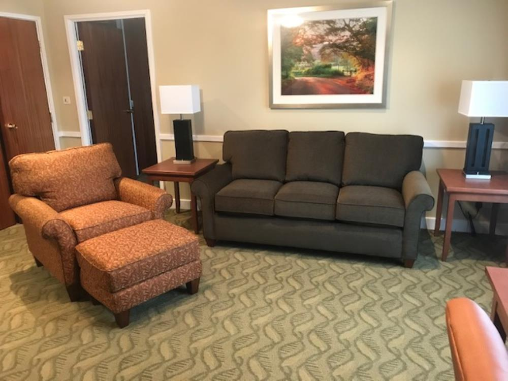

Temporary Lodging facility (TLF)
One of the most critical phases of your OCONUS relocation is transitioning through a Temporary Living Facility (TLF) while you search for a permanent home in the UK. Whether you are an active-duty military member, a federal civilian employee, or an unaccompanied service member, this guide unpacks everything you need to know about navigating your initial arrival.
We will cover how to secure your lodging, critical financial requirements upon arrival, pet policies, and the vastly different allowance rules that apply to military personnel versus Department of Defense (DoD) civilians. With a high volume of personnel moving through Suffolk, planning this step early is the key to a stress-free transition.
1

Securing Your Lodging
Temporary Lodging Facilities (TLF) at RAF Lakenheath are managed on-base via Liberty Lodge Check-In. If you are arriving on official Permanent Change of Station (PCS) or Temporary Duty (TDY) orders, this should be your first point of contact. If on-base lodging is completely full, the staff will issue a Non-Availability (NA) letter, which legally permits you to book off-base commercial hotels while continuing to claim your Temporary Lodging Allowance (TLA)
On-Base Temporary Lodging
If you are travelling on orders, your mandatory starting point is the official Air Force Inn facility located directly on base.
If Liberty Lodge is at full occupancy, customer service staff will check availability and coordinate overflow reservations directly with the Gateway Inn Reception Lobby at nearby RAF Mildenhall.
Off-Base Commercial Alternatives (TLA/TLF Approved)
If you have been issued a Non-Availability letter, or if you are a non-sponsored visitor looking for local accommodation, there are several highly rated commercial options within a short drive of the base gate.
Securing Your Stay & Upfront Costs
Making your temporary lodging arrangements as far ahead of your arrival as possible is absolutely paramount. There is no guarantee that you will be offered an on-base facility; due to the high volume of personnel moving into the Suffolk area, TLFs fill up incredibly quickly—particularly during the peak summer PCS season.
Lodging facilities are located at both RAF Lakenheath and RAF Mildenhall, providing family, officer, and enlisted quarters on a priority basis to all military and authorized civilians relocating to the area. Personnel traveling on temporary duty (TDY) or leisure
2
leave are accommodated strictly on a Space-Available (Space-A) basis. While the maximum allowable TLF stay is 30 days (if space is available), room availability and exact costs are subject to change. Always consult the lodging desk directly when making reservations to obtain the most current information.
Financial Notice Upon Arrival
Air Force regulations require all lodging guests to secure their room with a valid credit card at check-in. Guests are required to pay for their full stay upfront unless they are staying for 30 days or more, in which case they will be billed in 10-day increments. Liberty Lodge accepts Visa, MasterCard, personal checks, or cash. Note that a service charge will be assessed for any checks returned for insufficient funds.
No Government Travel Card (GTC)?
If you find yourself needing to pay for lodging and do not currently possess a Government Travel Card, do not panic. Reach out to the Military and Family Readiness Centre (MFRC) for immediate financial emergency assistance and guidance at +44 (0)1638 523847 or DSN 226-3847.
TLA vs TQSA Arrival (Military vs Civillian) Active-Duty Military receive Temporary Lodging Allowance (TLA): TLA is granted in strict 10-day increments. To maintain eligibility, service members must physically visit the RAF Lakenheath Housing Office every 10 days to recertify that they are aggressively searching for a house.
Federal Civilian Employees receive Temporary Quarters Subsistence Allowance (TQSA): Governed by the Department of State Standardized Regulations (DSSR) and the Joint Travel Regulations (JTR), civilians are typically authorized up to 90 days of temporary housing. Instead of a 10-day loop, civilians extend their lodging in 30-day increments directly through the base Civilian Personnel Office (CPO).
Traveling with Pets
Liberty Lodge features 21 designated pet-friendly rooms. When you contact the reservations desk, a guest services representative will confirm whether a pet room is available for your dates.
limit of two pets per family. ● Fees & Paperwork: An additional fee of $10.00 per night is assessed for pet rooms. At check-in, you must physically provide your pet’s complete immunization and health records to the staff.
3
and must be kenneled at all times when guests are not physically inside the room. ● The Waitlist: If a pet room is full upon arrival, you will be placed on a waiting list.
If a pet room becomes available before or during your stay, the staff will contact you for a room-type adjustment. You can also proactively check daily availability by calling the front desk.
Have More Questions?
Housing Office 01638-52 2000 0800 – 1600: Mon, Tues and Wed 0930 – 1600: Thur 0800 – 1530: Fri US Holidays: Open / UK and MOD Holidays: Closed
Keep this guide handy.
Download the PDF version for easy reference offline.